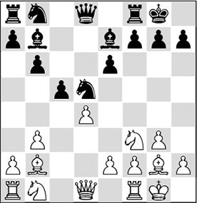
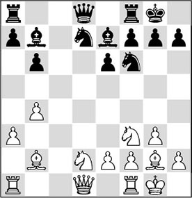
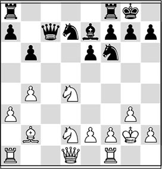
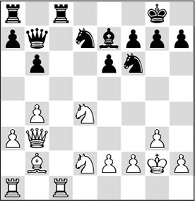
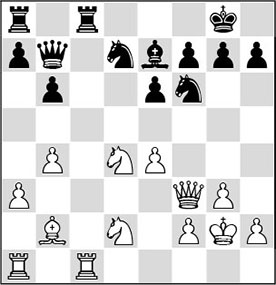
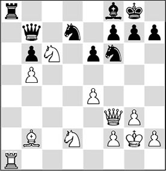
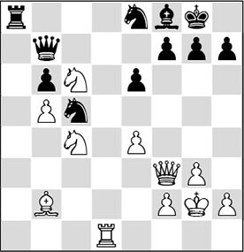
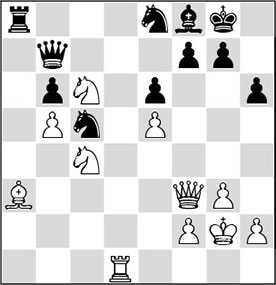
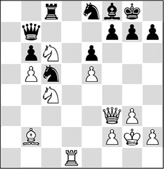
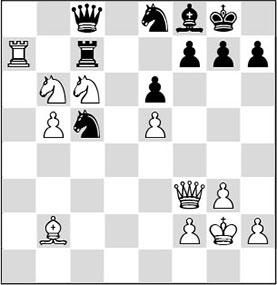

Chapter 13
Quiz: strong square
13.1 Introduction
In this book we have frequently talked about strong squares. Almost in every game these can play an important role. A strong square for one player will be a weak (or vulnerable) one for the other. Precisely on such squares, pieces may find the employment they are searching for.
13.2 Quiz
You learn to play chess by doing it yourself. In this chapter we focus on an exercise on the theme of creating and exploiting a strong square. I’d like to offer you a game where you can try to make difficult strategic decisions yourself with the help of a game of question and answer.
To test yourself, it’s best if you cover the text with a piece of paper. You can slowly move it downwards until you encounter a grey bar, in which you are asked to predict the next move. Under each bar you will find a question, sometimes a multiple-choice one. You can look at the detailed solution with the accompanying explanations directly after it. Have fun!
Amsterdam 1963 (4)
Model game Quiz
1.c4 ♘f6 2.♘f3 e6 3.g3 d5 4.♗g2 ♗e7 5.0-0 0-0 6.b3 b6 7.♗b2 ♗b7 8.cxd5 ♘xd5 9.d4 c5?!
Perhaps a little premature. It was more logical to first complete his development with 9…♘d7.

10.dxc5!
Answer to Question 1:
This is White’s best reaction. This exchange will cause Black to lose some time, as now he will have to make two moves with his king’s bishop. Although all the centre pawns have been traded off, and thus a completely symmetrical pawn structure has been created, White will enjoy a slight lead in development.
10…♗xc5
With 10…bxc5 11.♘bd2, Black would saddle himself with an ugly weakness on c5. Also after 10…♗f6 11.♗xf6 ♕xf6 12.♘bd2 ♘c3 13.♕e1 bxc5 14.♘c4, the weakness on c5 will make Black suffer in the near future.
11.♘bd2 ♘d7 12.a3 ♘5f6
12…a5 should have been preferred, in order to maintain his bishop on c5 in any event.
13.b4 ♗e7

14.♘d4!
Answer to Question 2:
C) is the right concept. It is not so obvious to allow the exchange of the light-squared bishops. In general, this will help Black, certainly if the queen can take up the position of the bishop on b7. However, Botvinnik has very cleverly assessed that in this instance, the exchange will work in his favour. The reason for this will be revealed later.
A) 14.♕b3 is a logical move, to connect the rooks, but its major downside is that Black can drive away the queen with 14…♗d5, and it will have no good square.
D) 14.♖c1 is a perfectly normal move, but it hardly helps White. As Black has slightly less space, it will be pleasant for him if he can exchange rooks. After 14…♖c8, followed by …♖xc1, …♕d8-a8 and …♖f8-c8, Black can neutralize the pressure.
B) The intention of 14.♖e1 is to further increase White’s space advantage with e2-e4. This is an interesting possibility. However, with 14…a5! Black can attack White’s strong point b4, after which White’s advantage seems to evaporate.
14…♗xg2
After 14…♘d5 15.e4 ♘5f6 16.e5! ♘d5 (16…♗xg2 17.exf6!) 17.♘c4 ♖c8 18.♖c1, White would also have gained the upper hand.
15.♔xg2 ♕c7
Attacking with 15…a5 would not have the desired effect. After 16.♘c6 ♕e8 17.♘c4, White is clearly better.

16.♕b3
Answer to Question 3:
Now the queen does find a good square on b3, as the harassing move …♗d5 is not on here. Also, the queen strives for the f3-square, where it eyes the beautiful square c6.
16…♖fc8 17.♖fc1 ♕b7+

18.♕f3!
Answer to Question 4:
A) is the correct answer. It is curious that White also offers to exchange queens. His most important motive is that after this swap he will definitively conquer the c6-square for the knight, getting a firm grip on the position. The other options do not meet this demand, and therefore we should dismiss them.
18…♘d5
Black does not cooperate, but now he has to make further concessions.
19.e4
An enormous blunder would have been 19.b5??. After 19…♘e5! 20.♕e4 f5, the queen cannot be maintained on the long diagonal, and Black will have a devastating discovered check: 21.♕xe5 ♘e3+.
19…♘5f6

20.b5!
Answer to Question 5:
An important moment in the game. White finally decides to fix the c6-square, on which he has focused all this time. He leaves the c5-square to his opponent. A few variations in the following will prove that the possession of the c6-square is more important than that of the c5-square.
20…a6
After 20…♖xc1 21.♖xc1 ♖c8 22.♘c6! ♗c5 23.♘c4, White has a large advantage. In this position, he will continue with ♖d1, after which he can try and enter via the d6-square.
Here, 20…♘e5 (!) would have been relatively the best defence. After 21.♕e2 ♖xc1 22.♖xc1 ♖c8 23.♖xc8+ ♕xc8 24.f4 ♘ed7 25.♘c6 ♗f8 26.♘c4 (this move is better than 26.♘xa7, since in that case Black could develop counterplay with 26…♕c2), White maintains the initiative, even though Black has done well by exchanging all the rooks.

21.♘c6
Answer to Question 6:
Before Black can swap a rook, White plays his knight to the strong square c6 as quickly as possible. There the knight will stir up heaps of trouble in the black ranks.
21…♗f8 22.a4 axb5 23.axb5 ♖xa1 24.♖xa1 ♖a8

25.♖d1!
Answer to Question 7:
C) is the right answer. The move played is quite deep. Botvinnik realizes that Black cannot do much with the open a-file, and that it is helpful for him to keep a pair of rooks on the board, so that he can derive the maximum profit from his beautiful knight on c6. The best square for the rook is d1, since White can run most of his operations along the d-file.
25…♘e8?!
For Black it is quite difficult to defend himself, but with his last move Donner simplifies White’s task. After a ‘half-move’ like 25…♕c8, White would still have to determine how to make progress.
26.♘c4
Even stronger was 26.e5, since White could then work with some direct threats. For example, Black must seriously reckon with the possibility of ♘e7+.
26…♘c5
Perhaps it would have been better for Black to admit his mistake and play 26…♘ef6, although this would not have been without consequences either.

27.e5!
Answer to Question 8:
Now Botvinnik does play this! Since Black cannot immediately establish a knight on d5, White can play the pawn to e5, further restricting Black. What’s more, ♘d6 now becomes a realistic possibility, after which White would be able to work with a dangerous passed pawn. Finally, the position now contains several tactical tricks, which will soon become decisive.
27…♖c8
Answer to Question 9:
A) After 27…♘c7, White has an attractive combination that yields him the win: 28.♖d7! ♘xd7 29.♘e7+ ♗xe7 30.♕xb7;
B) The downside to 27…♖a2 is that the weakness of Black’s back rank becomes a big problem: 28.♖d8, and now 28…♖a8 (28…♘c7 29.♘e7+) fails to 29.♖xa8 ♕xa8 30.♘e7+ ♗xe7 31.♕xa8;
C) 27…♖a4 28.♘d6 ♘xd6 29.exd6 ♕d7 30.♘e5, and White’s passed pawn, combined with the threat of ♕xf7, decides the battle.
After a ‘half-move’ like 27…h6 it is difficult to make out what exactly White should do:
1) It seems logical to work with an action like 28.♘d6, but after 28…♗xd6 29.exd6 ♔f8!, Black will hold for now;
2) Since the knight on c5 is the most important defender, we now know how White should go about this: 28.♗a3!

Analysis diagram
In this way, White will later attack the cornerstone of Black’s defence.
On 28…♖a4, 29.♗xc5 wins: 29…bxc5 (not 29…♗xc5 30.♖d8 ♔f8 in view of 31.♘d6 ♗xd6 32.exd6, and White wins) 30.♘d6 ♗xd6 31.exd6, and now the double threat of d6-d7 and ♘c6-e7+ ends it all, since 31…♕d7 fails to 32.♘e5.

28.♖a1!
Answer to Question 10:
Flexible thinking characterizes the greatest players. Now that Black has removed his rook from the a-file, Botvinnik thankfully makes use of this.
28…♖c7
No solution is offered by 28…♕c7 29.♖a7, as after 29…♘b7, White must direct his attention to the weak point b6. He does this as follows: 30.♗d4 ♗c5 31.♗xc5 bxc5, and now 32.♘4a5 wins.
29.♖a7 ♕xa7
The position after 29…♕c8 30.♘xb6 is beautiful.

Analysis diagram
An artistic queen catch.
30.♘xa7 ♖xa7 31.♘xb6
And Black resigned.